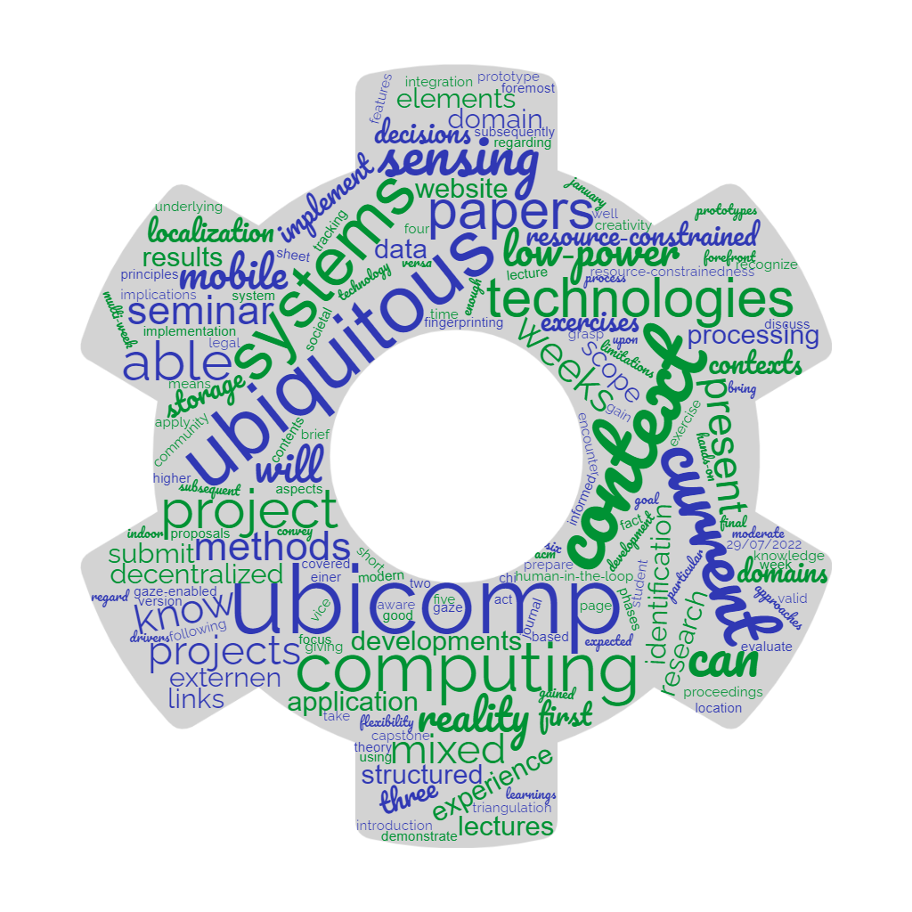
Computersysteme
Processors and Assembly
Simon Mayer
University of St.Gallen
Bachelor in Computer Science
Computersysteme (1,904)
From insight to impact.
Course Syllabus
Computersysteme | Institute of Computer Science | University of St.Gallen
2Remember: We Built Adders
- A half-adder adds two bits: the sum is an exclusive OR, the carry is an AND
- 1× 8-bit adder = 8× 1-bit adders that are connected properly: 40 gates, about 80 transistors
- Arranged in a 3D grid, that's a cube of about 125 nm × 125 nm × 125 nm
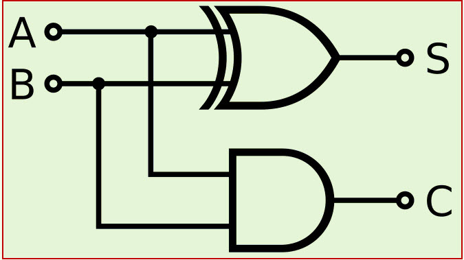
Recap of lecture 2
Computersysteme | Institute of Computer Science | University of St.Gallen
3Our Journey So Far…
| Step | Building blocks | Where |
|---|---|---|
| Information | Binary digits + context: numbers, text, pixels and colors, instructions | Lecture 1: done! |
| Logic + arithmetic | School mathematics (logic, set theory); logic operations (NOT, NOR, …, NAND) | Lecture 2: done! |
| Electronics | Logic gates from electronic components (today: transistors) | Lecture 2: done! |
| Calculator | Adder circuits and circuits for other arithmetic functions: a general-purpose calculator! | Lecture 2: done! |
| Processor | Function selector, arithmetic/logic unit, control unit, registers: voilà, a CPU! | Today |
| Programs | Instruction sets, machine code and assembly language | Today, and lecture 4 |
Computersysteme | Institute of Computer Science | University of St.Gallen
4Our Menu for Today
Building a Computer
Designing a simple Instruction Set
Introduction to Assembly Language
Basic Assembly Constructs
Computersysteme | Institute of Computer Science | University of St.Gallen
5Central Processing Units: A Story of Two (?) Enterprises
- Intel («Team Blue»)
- AMD («Team Red»)
- First to break the 1 GHz clock speed barrier for a mainstream processor
- First to introduce x86-64 (most machines are still capable of executing IA32 in backwards-compatibility mode)
- Nvidia («Team Green»), focusing on graphics processing units (GPUs)
- ARM, focusing on mobile, power-efficient processors, often within mobile SoCs
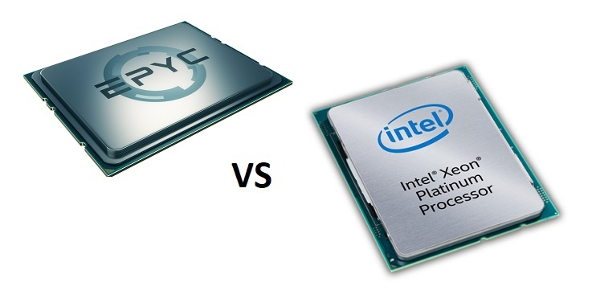
Computersysteme | Institute of Computer Science | University of St.Gallen
6Intel, AMD, Nvidia
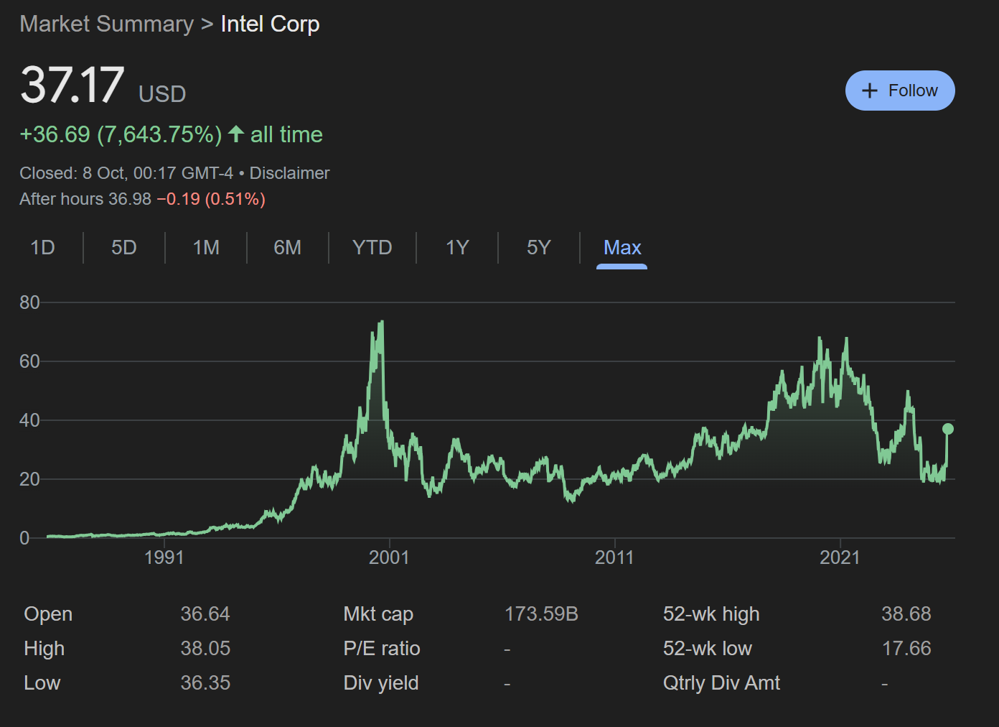
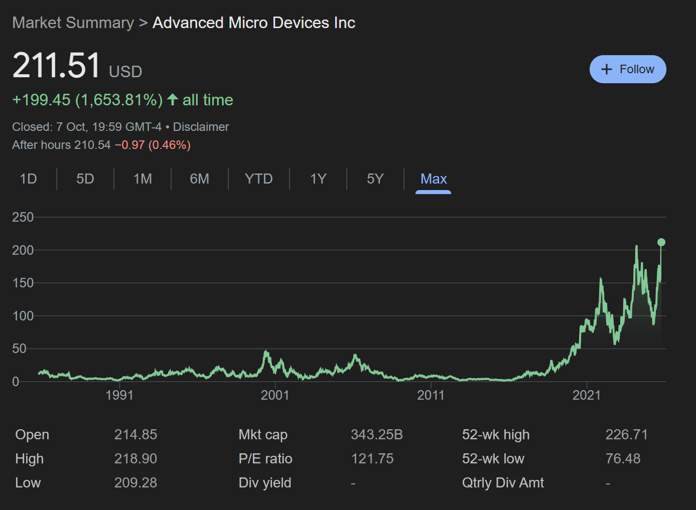
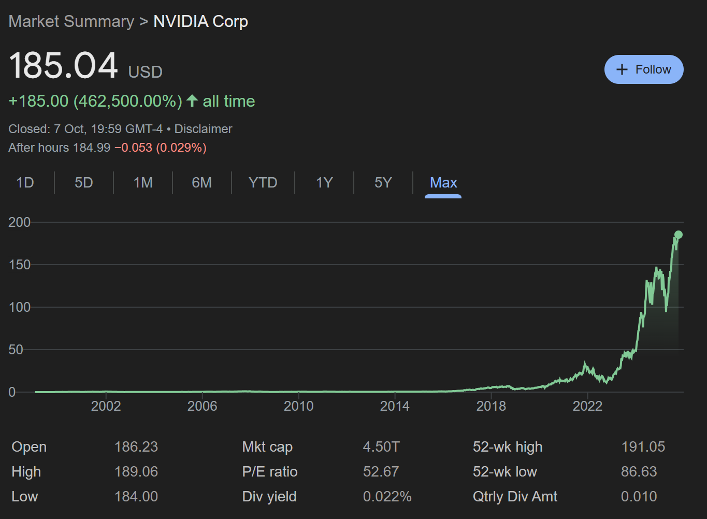
Computersysteme | Institute of Computer Science | University of St.Gallen
7Who Manufactures Integrated Circuits?
- Integrated device manufacturers design and manufacture the circuits
- Intel, Samsung, Texas Instruments, Infineon (Intel now also runs a pure-play foundry business)
- Pure-play foundries manufacture the designs of fabless (= non-fabricating) companies
- TSMC, GlobalFoundries, UMC
- Fabless companies outsource production to such a fabrication company
- AMD, Nvidia, Qualcomm, Zhaoxin, Apple
- ARM is different again: it licenses IP and does not sell chips at all
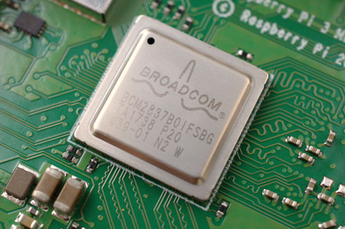
Computersysteme | Institute of Computer Science | University of St.Gallen
8CPU Architectures Work with Two Main Illusions
Instruction set architecture
- ISAs assume that instructions are executed in sequence
- Processor hardware is more elaborate, but ensures that the overall behavior matches sequential execution
Linear memory model
- We assume that memory is simply a very large byte array
- Hardware is much more elaborate, but makes sure that its outside behavior matches the linear memory model
In the lectures, you will see x86-64; in the second exercise, you apply the concepts to ARMv8.
Computersysteme | Institute of Computer Science | University of St.Gallen
9Let's build a simple CPU that works on 4-bit numbers
Computing is just mathematics (that's what Leibniz said already!). Simple idea, in principle…
- Construct an adding circuit
- Construct multiplier, subtractor, divider circuits: let's say we have 4 such units!
- Add memory for inputs and outputs
- Wire all these components together…

Computersysteme | Institute of Computer Science | University of St.Gallen
10We also want to select which of these four functions to perform!
Introduce two «function select» bits:
- 00
- activate the add unit
- 01
- activate the multiply unit
- 10
- activate the subtract unit
- 11
- activate the divide unit
first 4-bit number second 4-bit number
| |
+-----+------+------+-----+
| add | mult | sub | div | <- function
+-----+------+------+-----+ select
| (2 bits)
output / resultDone! Here's a general-purpose calculator. The function select bits are instructions for a «control unit».
Computersysteme | Institute of Computer Science | University of St.Gallen
11Putting It Together
- ALU
- you've designed this ;-)
- Control unit
- which instruction is executed next?
- Registers
- very small, extremely fast memory (e.g., 16× 64-bit general-purpose registers): data that the ALU can directly compute on
- Memory («RAM»)
- holds more data
- Persistent storage (e.g., SSD)
- holds even more data
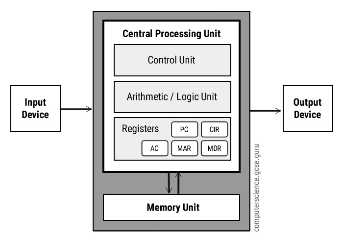
Computersysteme | Institute of Computer Science | University of St.Gallen
12Putting It Together: The Real Parts
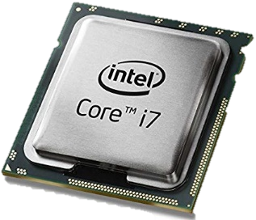
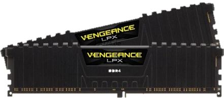
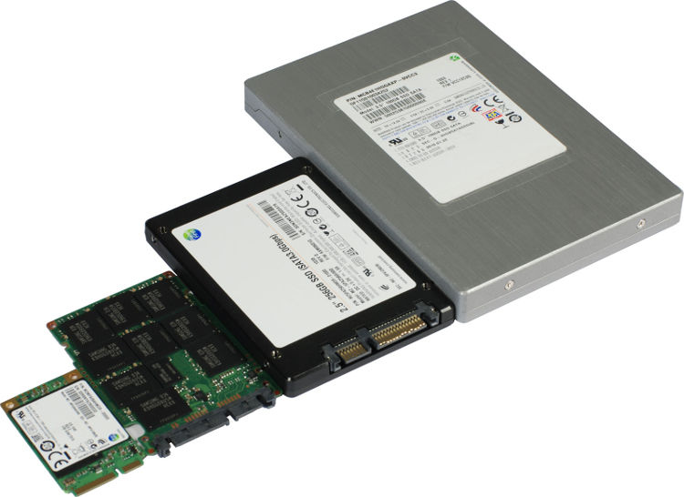
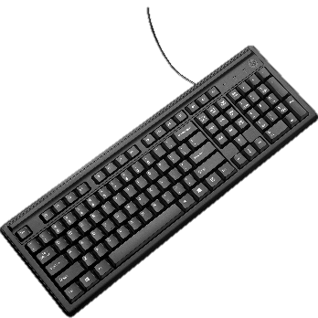
Computersysteme | Institute of Computer Science | University of St.Gallen
13Remember miniaturization…?

Computersysteme | Institute of Computer Science | University of St.Gallen
14Intel 8008 (1972)
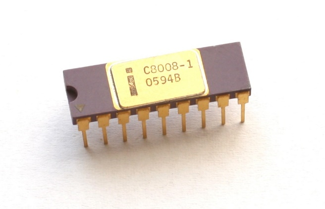
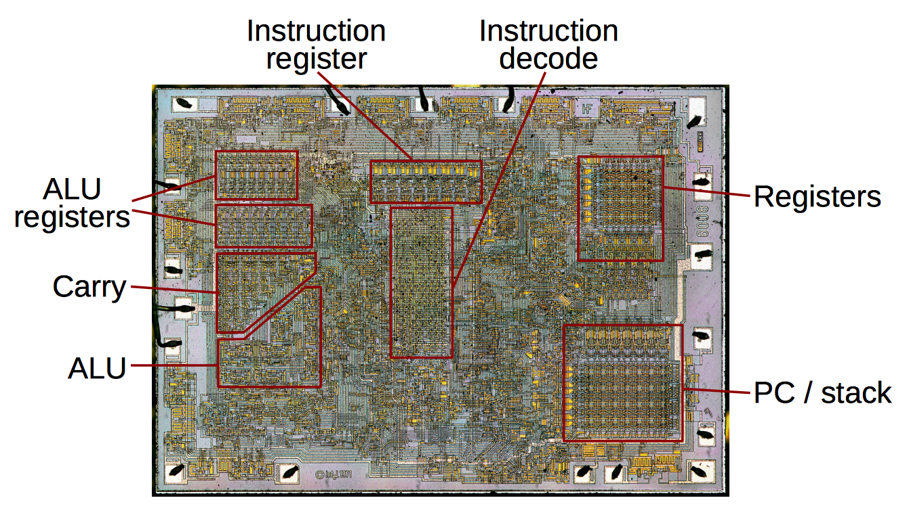
righto.com: Die photos and analysis of the 8008
Computersysteme | Institute of Computer Science | University of St.Gallen
15Intel Core i7 Haswell Refresh (2014)
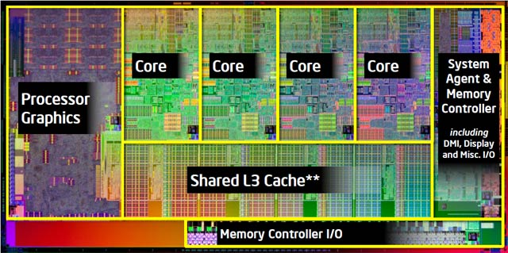
guru3d.com: Core i7 4790 processor review
Computersysteme | Institute of Computer Science | University of St.Gallen
16Apple M1 System-on-Chip (2020)
- CPU
- Central Processing Unit
- GPU
- Graphics Processing Unit
- NPU
- Neural (Network) Processing Unit
- SLC
- System-Level Cache
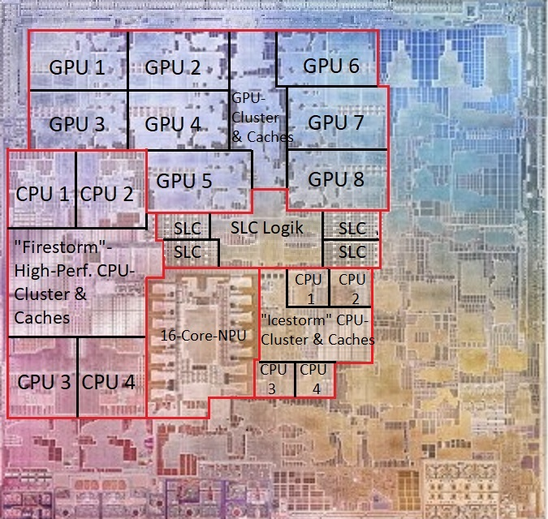
Computersysteme | Institute of Computer Science | University of St.Gallen
17Our Menu for Today
Building a Computer
Designing a simple Instruction Set
Introduction to Assembly Language
Basic Assembly Constructs
Computersysteme | Institute of Computer Science | University of St.Gallen
18Designing a Simple Instruction Set Architecture
Here's the CPU hardware we have: 4 memory slots and 2 data registers of 4 bits each, and an ALU that can add and subtract.
Computersysteme | Institute of Computer Science | University of St.Gallen
19Our Instruction Set: 5 Instructions
| Instruction | Encoding |
|---|---|
| Load from memory address xx (M[xx]) into register y (R[y]) | 000 xx y |
| Store from R[x] into M[yy] | 001 x yy |
| Add the contents of R[0] and R[1] and store the result in R[x] | 010 x |
| Subtract the contents of R[0] from R[1] and store the result in R[x] | 011 x |
| Insert the 4-bit number n into M[xx] | 100 nnnn xx |
Memory: addresses 00, 01, 10, 11. Registers: addresses 0 and 1.
Computersysteme | Institute of Computer Science | University of St.Gallen
20Writing a Program for our ISA
- 7 = 0 × 8 + 1 × 4 + 1 × 2 + 1 × 1 = 01112
- Insert (
100) 7 (0111) into M[00] (00):100 0111 00
// Machine-level program that adds 7 and 8 Insert 7 into M[00]: 100 0111 00 Insert 8 into M[01]: ? Load from M[00] to R[0]: ? Load from M[01] to R[1]: ? Add registers into R[0]: ? Store R[0] into M[10]: ?
Computersysteme | Institute of Computer Science | University of St.Gallen
21Writing a Program for our ISA: Done!
- Memory afterwards: M[00] = 7, M[01] = 8, M[10] = 15
- Registers afterwards: R[0] = 15 (it held 7 before the add), R[1] = 8
// Machine-level program that adds 7 and 8 Insert 7 into M[00]: 100 0111 00 Insert 8 into M[01]: 100 1000 01 Load from M[00] to R[0]: 000 00 0 Load from M[01] to R[1]: 000 01 1 Add registers into R[0]: 010 0 Store R[0] into M[10]: 001 0 10
Computersysteme | Institute of Computer Science | University of St.Gallen
22What if we write the program in this way?
- The encoding of this machine-level program is unique!
- We could say that this is the 611'097'513'226th program of our ISA
- So this means that programs themselves are just numbers…
1000111001001000010000000000110100001010 100 0111 00 Insert 7 into M[00] 100 1000 01 Insert 8 into M[01] 000 00 0 Load M[00] to R[0] 000 01 1 Load M[01] to R[1] 010 0 Add into R[0] 001 0 10 Store R[0] into M[10]
Computersysteme | Institute of Computer Science | University of St.Gallen
23Reading the Bits: One by One
Let's read machine code one bit at a time…
0- could be load, store, add or subtract. Let's see the next bit.
0 0- could be load or store. Let's see the next bit.
0 0 0- ah, this must be load. Expecting 3 more bits to complete the instruction.
000 01 1- aha! This is a load from M[01] to R[1]. Done. Next instruction please!
Computersysteme | Institute of Computer Science | University of St.Gallen
24DemoAnother Computer Program
1000010001001000010000000000110110001000
- Note that everything here is again just binary. So we can use our digital circuits to actually process all of this!
Load M[xx] -> R[y] 000 xx y Store R[x] -> M[yy] 001 x yy Add R[0] + R[1] -> R[x] 010 x Sub R[1] - R[0] -> R[x] 011 x Insert n -> M[xx] 100 nnnn xx
Computersysteme | Institute of Computer Science | University of St.Gallen
25Another Computer Program: Decoded
- Memory afterwards: M[00] = 6 (it held 2 before), M[01] = 8
- Registers afterwards: R[0] = 6, R[1] = 8
100 0010 00 Insert 2 into M[00] 100 1000 01 Insert 8 into M[01] 000 00 0 Load M[00] into R[0] 000 01 1 Load M[01] into R[1] 011 0 R[0] = R[1] - R[0] 001 0 00 Store R[0] into M[00]
Computersysteme | Institute of Computer Science | University of St.Gallen
26Self-Test: Write a Multiplier Using Our ISA
For example, a «multiply-by-4».
Load M[xx] -> R[y] 000 xx y Store R[x] -> M[yy] 001 x yy Add R[0] + R[1] -> R[x] 010 x Sub R[1] - R[0] -> R[x] 011 x Insert n -> M[xx] 100 nnnn xx
Computersysteme | Institute of Computer Science | University of St.Gallen
27Putting Everything Together
Memory holds program data and instructions. The CPU runs in a loop; in each cycle:
- Fetch
- the control unit decides which instruction is next and fetches it from memory
- Decode
- the CPU finds out what data the instruction needs, and what to do with it
- Load
- the required data is loaded into the CPU registers
- Execute
- the ALU computes the result of the instruction
- Store
- the result is sent back and stored in memory
Computersysteme | Institute of Computer Science | University of St.Gallen
28The CPU Clock
- How often this cycle is executed per second is determined by the CPU clock
- However, only few instructions take exactly one clock cycle to execute
- Example: on a modern Intel/AMD core, an integer multiplication has a latency of about 3 cycles (on the 2004 Intel Nocona, it was 10)
- We'll talk more about this when we go into processors after the semester break
All of this is (of course) just bits in context…
Computersysteme | Institute of Computer Science | University of St.Gallen
29Let's add instruction memory!
«The instruction 100001000b (insert 0010b at memory 00b) is located at memory address 0x100.»
| Address | Instruction | Meaning |
|---|---|---|
| 0x100 | 100001000 | Insert 2 in M[00] |
| 0x102 | 100100001 | Insert 8 in M[01] |
| 0x104 | 000000 | Load M[00] into R[0] |
| 0x105 | 000011 | Load M[01] into R[1] |
| 0x106 | 0100 | Add into R[0] |
| 0x107 | 001000 | Store R[0] into M[00] |
We address memory in bytes (0x100 = 256). A 9-bit instruction is rounded up to the next byte: 2 bytes.
Computersysteme | Institute of Computer Science | University of St.Gallen
30Why 0x102? Because we count the bits in the instruction (9 bits) and round up to the next byte (2 bytes).This will become boring fast…
def annoying_question():
print("Welcome to the *Annoying Input Machine*!")
while True:
answer = input("Quick! Tell me your deepest secret "
"(or type 'stop' to escape)")
if answer == "stop":
print("But I do want to know your secret…!")
else:
print(f"'{answer}'? Interesting choice...")Computersysteme | Institute of Computer Science | University of St.Gallen
31Let's add control flow
A sixth instruction: «continue executing with the instruction at hexadecimal address HHH».
- Encoding:
101 HHH - e.g.,
101 100to continue at 0x100. But this would mix binary and hex! Context confusion!! - Better in binary:
101 000100000000
Load M[xx] -> R[y] 000 xx y Store R[x] -> M[yy] 001 x yy Add R[0] + R[1] -> R[x] 010 x Sub R[1] - R[0] -> R[x] 011 x Insert n -> M[xx] 100 nnnn xx Jump to address HHH 101 HHH
Computersysteme | Institute of Computer Science | University of St.Gallen
32What does this program do?
0x100 100001000 Insert 2 in M[00] 0x102 100100001 Insert 8 in M[01] 0x104 000000 Load M[00] into R[0] 0x105 000011 Load M[01] into R[1] 0x106 0100 Add into R[0] 0x107 001000 Store R[0] into M[00] 0x108 101000100000110 Jump to 0x106…
Computersysteme | Institute of Computer Science | University of St.Gallen
33M[00]: 2 … 10 … 18 … 26 … 34 …Any Questions / Comments / Doubts / Concerns?
Take-Homes
- We can selectively switch on our adding circuit, or other types of circuits
- The instructions that switch them on or off are binary as well: they are what the processor executes
- The processor works with memory that holds instructions and data, and runs in a cycle through all instructions
- Very basic control flow can be realized through instruction jumps
Computersysteme | Institute of Computer Science | University of St.Gallen
34How to Study this Material?
Basic Depth
- On this topic, the slides are self-contained! Go through the examples, create your own ISA, write your own programs in it
- Start reading the chapter «Machine-Level Representation of Programs» of Bryant & O'Hallaron
- Consider Microarchitecture and Instruction Set Architecture (GeeksforGeeks), a great overview
- And Instruction set architecture (Wikipedia): its section on instruction encoding aligns directly with today
Advanced Depth
- An interesting technical read: the ARMv8-M architecture. See if you like it!
- You might already want to have a look at the ARM Assembly Cheat Sheet
Computersysteme | Institute of Computer Science | University of St.Gallen
35Our Journey So Far…
| Step | Building blocks | Where |
|---|---|---|
| Information | Binary digits + context: numbers, text, pixels and colors, instructions | Lecture 1: done! |
| Logic + arithmetic | School mathematics (logic, set theory); logic operations (NOT, NOR, …, NAND) | Lecture 2: done! |
| Electronics | Logic gates from electronic components (today: transistors) | Lecture 2: done! |
| Calculator | Adder circuits and circuits for other arithmetic functions: a general-purpose calculator! | Lecture 2: done! |
| Processor | Function selector, arithmetic/logic unit, control unit, registers: voilà, a CPU! | Done! |
| Programs | Instruction sets, machine code and assembly language | Today, and lecture 4 |
Computersysteme | Institute of Computer Science | University of St.Gallen
36Putting Everything Together: From Program to Processor
Remember the bit string 11111111 00111111 11111111 00111111? Bits can also be a machine-level instruction in an x86 processor.
- e.g.,
addq %rax,%rbx: «Add the two numbers stored in registers %rax and %rbx and store the result in register %rbx.» - Demo: high-level program code to assembly code with godbolt.org
- Demo: assembly code to bits with the online x86 assembler
Computersysteme | Institute of Computer Science | University of St.Gallen
37Putting Everything Together
- High-level programming language (e.g., C, C#, Go):
long doubleMe(long number) { return number + number; } - Assembly code (ASM): on the left
- Executable machine code, as hex numbers: on the right
- …as one hex number: 55 48 89 E5 48 89 7D E8 48 8B 45 E8 48 01 C0 48 89 45 F8 48 8B 45 F8 5D C3
- …and as one (long) binary number
push rbp 0: 55 mov rbp, rsp 1: 48 89 e5 mov QWORD PTR [rbp-24], rdi 4: 48 89 7d e8 mov rax, QWORD PTR [rbp-24] 8: 48 8b 45 e8 add rax, rax c: 48 01 c0 mov QWORD PTR [rbp-8], rax f: 48 89 45 f8 mov rax, QWORD PTR [rbp-8] 13: 48 8b 45 f8 pop rbp 17: 5d ret 18: c3
Computersysteme | Institute of Computer Science | University of St.Gallen
38Teams of 2, take 2
An example ISA:
- Jump
00- Run
001- Stop
10- Hit
01
00100001
might be 001 00 001
Run-Jump-Run
might be 00 10 00 01
Jump-Stop-Jump-HitComputersysteme | Institute of Computer Science | University of St.Gallen
39Observations
- More common instructions have shorter encodings
- From a given starting position, the decoding of bits to machine instructions is unique
- Core issue of the example: the encoding of «Jump» (00) is a prefix of the encoding of «Run» (001)
- We say that such codes break the Fano condition
godbolt.org · defuse.ca/online-x86-assembler.htm
Computersysteme | Institute of Computer Science | University of St.Gallen
40Leibniz would say: «Computer programs are very large numbers!»
Each computer program is a binary number, interpreted as executable instructions!

Computersysteme | Institute of Computer Science | University of St.Gallen
41This implies that there are (very many) problems for which no algorithm exists to solve them. Classic example: the Halting Problem.Problems Without Algorithms
Our doubleMe program, as one binary number:
- This implies that there are (very many) problems for which no algorithm exists to solve them
- Classic example: the Halting Problem
01010101 01001000 10001001 11100101 01001000 10001001 01111101 11101000 01001000 10001011 01000101 11101000 01001000 00000001 11000000 01001000 10001001 01000101 11111000 01001000 10001011 01000101 11111000 01011101 11000011
Computersysteme | Institute of Computer Science | University of St.Gallen
42Any Questions / Comments / Doubts / Concerns?
Take-Homes
- Not only data is binary, programs are too
- Processors run binary code, and compilers translate programs to binary machine code
- This translation requires a specification of the instruction set architecture of the target system
- This is why you needed to set up the arm-none-eabi toolchain: you compile for a different ISA!
Computersysteme | Institute of Computer Science | University of St.Gallen
43Now Let's Switch to Real ISAs
- Our instruction set: 5 instructions (load, store, add, subtract, insert)
- Intel x86-64: 981-3683 instructions, depending on what is counted as an instruction… (Intel manual)
- ARMv8: ~1000 instructions, again depending on what is counted… (ARMv8-A ISA)
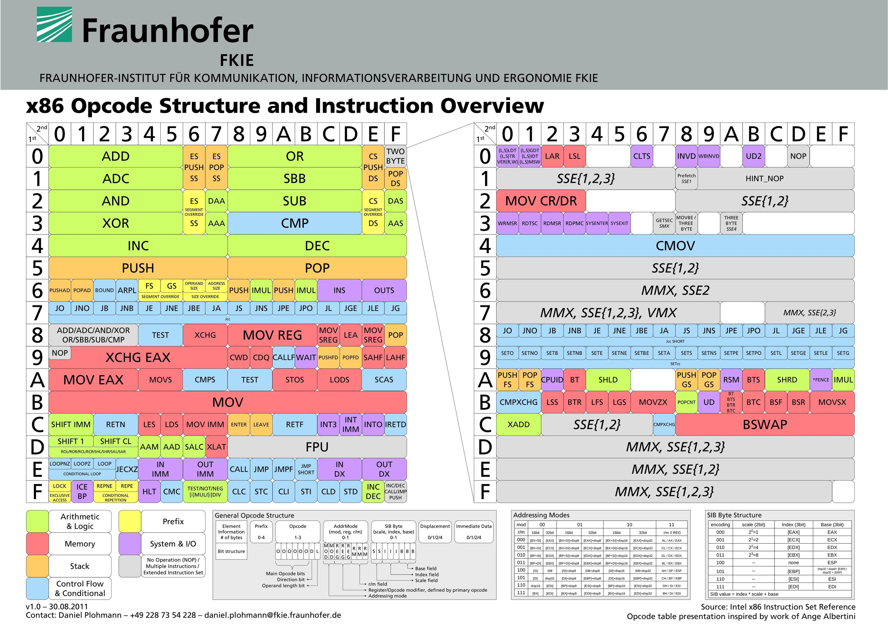
Computersysteme | Institute of Computer Science | University of St.Gallen
44Our Menu for Today
Building a Computer
Designing a simple Instruction Set
Introduction to Assembly Language
Basic Assembly Constructs
Computersysteme | Institute of Computer Science | University of St.Gallen
45Program Compilation and Execution
- High-level programming language: productivity features to simplify writing code; rather generic!
- Assembly code: textual representation of the machine code with individual instructions; machine-specific!
- Executable machine code: binary code that is generated from the assembly code and additional data
long doubleMe(long number) {
long doubleNumber = number + number;
return doubleNumber;
}godbolt.org · defuse.ca/online-x86-assembler.htm
Computersysteme | Institute of Computer Science | University of St.Gallen
46Remember Shifting?
- The compiler replaces the division by 8 with a shift by 3 bits
- It uses a logical shift for unsigned numbers
- Lecture 1: Shifting
unsigned udiv8(unsigned x)
{
return x/8;
}
// Compiled arithmetic operations
shrl $3, %eax # logical shift: x >> 3Try it: godbolt.org
Computersysteme | Institute of Computer Science | University of St.Gallen
47Exercise… and Lecture
- It compiles the C code in
power_blink.c(which can be understood by humans) into the filekernel.elf(which can be understood by machines) - Actually, you already know that
kernel.elfcan only be understood by one specific type of machine!
arm-none-eabi-gcc -g -nostartfiles \ -mfloat-abi=hard -O0 -DRPI4 \ -mfpu=crypto-neon-fp-armv8 \ -march=armv8-a+crc -mcpu=cortex-a72 \ power_blink.c -o kernel.elf
Computersysteme | Institute of Computer Science | University of St.Gallen
48Let's see it!
-ddisassembles the compiled program: instead of translating from human to machine, we translate back to human…- Adding
-Spreserves the structure of the original C code (if this information is available) - With a compiler installed, you can also do this with code compiled for your machine (most probably x86-64), e.g., system programs
arm-none-eabi-objdump -d kernel.elf arm-none-eabi-objdump -d -S kernel.elf objdump -d C:\Windows\System32\notepad.exe
Computersysteme | Institute of Computer Science | University of St.Gallen
49What are we seeing here?
8000:- the memory offset («memory address») of the instruction; 0x8000 is the default load address of 32-bit Raspberry Pi kernels (0x80000 in 64-bit mode), where your program starts
e308210c- the instruction itself as a hexadecimal number
movw- the mnemonic: a symbolic, human-readable name
r2, #33036- the parameters of the instruction
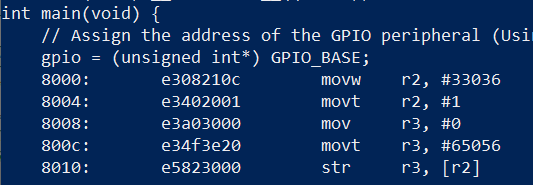
Together, all of this is assembly language: a thin layer just above the processing of 0s and 1s.
Computersysteme | Institute of Computer Science | University of St.Gallen
50Let's see what this does!
- Remember the definition:
#define GPIO_BASE 0xFE200000UL - r3 is 32 bits wide, so r3 contains 8 hex digits: 0x?? 0x?? 0x?? 0x??
- In bits: ???????? ???????? ???????? ????????
8000: e308210c movw r2, #33036 ; 0x810c 8004: e3402001 movt r2, #1 8008: e3a03000 mov r3, #0 800c: e34f3e20 movt r3, #65056 ; 0xfe20 8010: e5823000 str r3, [r2]
Computersysteme | Institute of Computer Science | University of St.Gallen
51Let's see what this does!
MOVW Rd, #imm16copies the value of Operand2 (an «immediate 16-bit value») into register Rd- After
mov r3, #0: r3 = 0x00 0x00 0x00 0x00 - In bits: 00000000 00000000 00000000 00000000
8000: e308210c movw r2, #33036 ; 0x810c 8004: e3402001 movt r2, #1 8008: e3a03000 mov r3, #0 800c: e34f3e20 movt r3, #65056 ; 0xfe20 8010: e5823000 str r3, [r2]
Computersysteme | Institute of Computer Science | University of St.Gallen
52Let's see what this does!
MOVT Rd, #imm16(«move top») writes a 16-bit immediate value to the top halfword, Rd[31:16]; it does not affect Rd[15:0]- After
movt r3, #65056: r3 = 0xFE 0x20 0x00 0x00 - In bits: 11111110 00100000 00000000 00000000. That's GPIO_BASE!
8000: e308210c movw r2, #33036 ; 0x810c 8004: e3402001 movt r2, #1 8008: e3a03000 mov r3, #0 800c: e34f3e20 movt r3, #65056 ; 0xfe20 8010: e5823000 str r3, [r2]
Computersysteme | Institute of Computer Science | University of St.Gallen
53Assembly language is (has to be!) simple
There are only few types of constructs:
| Construct | Instructions |
|---|---|
| Loading and storing of data from/to memory and registers | mov etc. |
| Execution of basic logic and arithmetic operations | add, sub, imul, shr … |
| Testing of conditions (e.g., x > 0; y <= 0) | cmp and test |
| Jumping (branching) to other addresses to control program flow | b and jmp |
All high-level constructs (conditionals, loops, function calls, recursion, variables, …) only help programmers write code efficiently. On the machine level, none of them exist directly: machine code is merely sequences of instructions in memory.
Computersysteme | Institute of Computer Science | University of St.Gallen
54Exercise… another particularly interesting line…
- Objdump shows us the machine code (so-called «assembly instructions») of the
kernel.elffile
// To emulate a "timer", we keep the
// processor busy counting to 500000
for(timer = 0; timer < 500000; timer++) {
;
}
// arm-none-eabi-objdump -D kernel.elf
80dc: e5932000 ldr r2, [r3]
80e0: e30a311f movw r3, #41247 ; 0xa11f
80e4: e3403007 movt r3, #7
80e8: e1520003 cmp r2, r3Computersysteme | Institute of Computer Science | University of St.Gallen
55movw and movt put 0x0007A11F = 499'999 into r3: the loop bound.How to Study this Material?
Basic Depth
- Play with programs in your ARM toolchain and with a gcc toolchain on your computer!
- Write small programs, compile them, disassemble them, look at the assembly
- Then, Exercise 2 will give you a large training opportunity
- Continue with lecture 4, Assembly Language
Advanced Depth
- A video on interesting assembly instructions in the x86-64 ISA
- Its PCMPxSTRx (pairwise comparison between strings, with several options) is useful for string search and shows why some ISAs are so large (discussion)
Computersysteme | Institute of Computer Science | University of St.Gallen
56Any Questions / Comments / Doubts / Concerns?
Computersysteme | Institute of Computer Science | University of St.Gallen
57